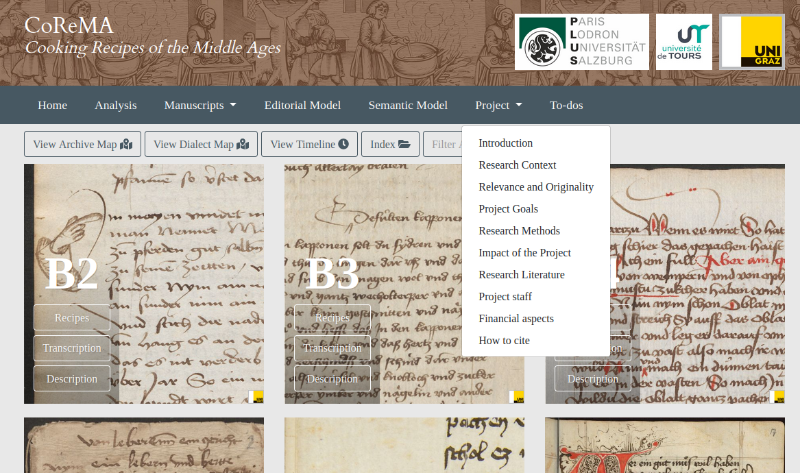
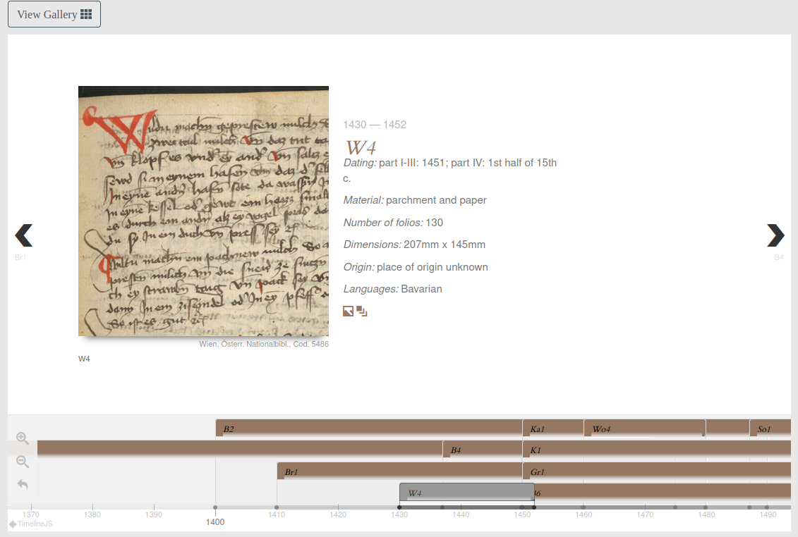
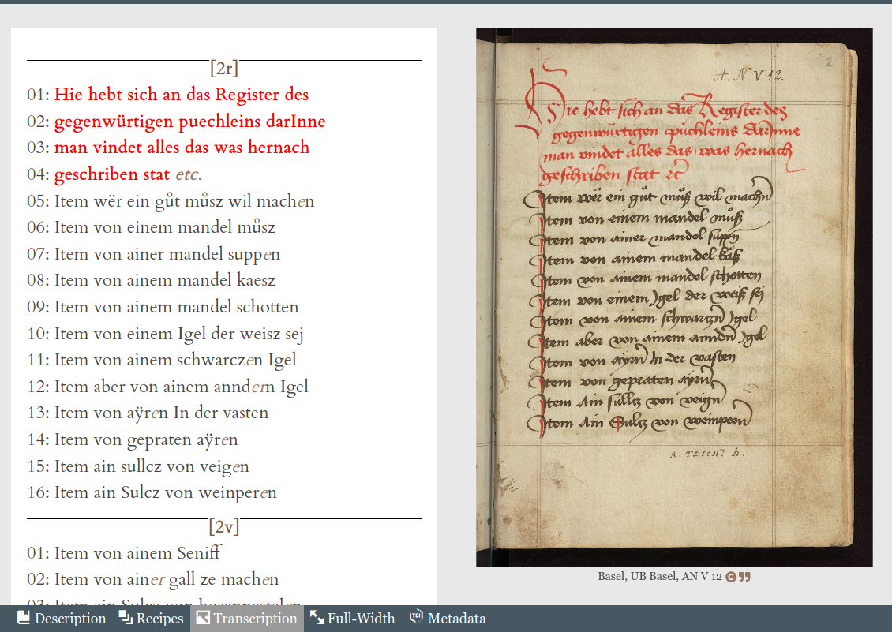
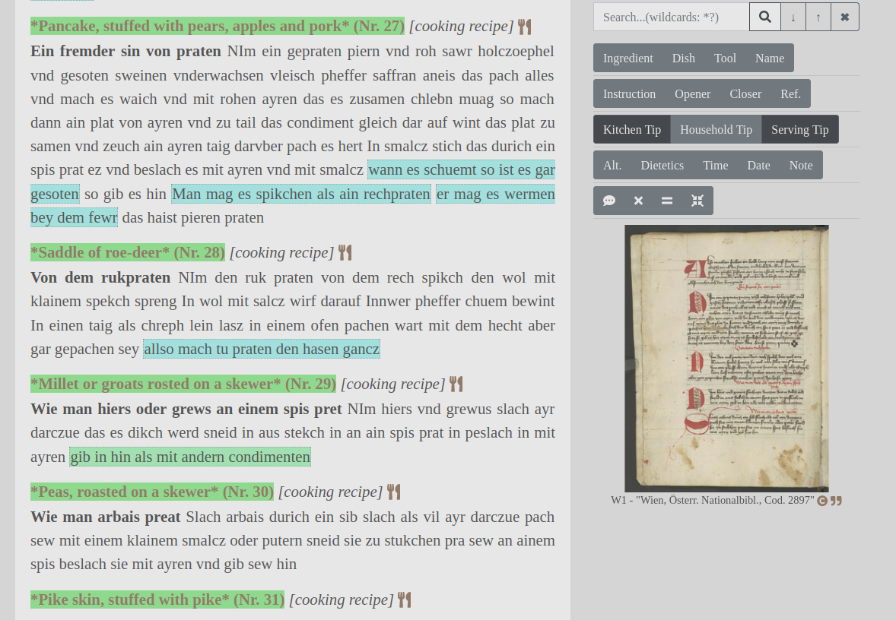
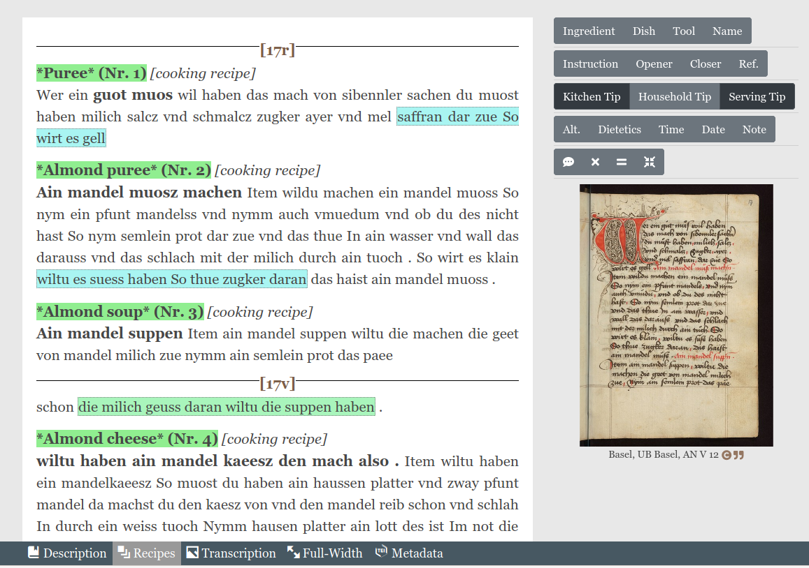
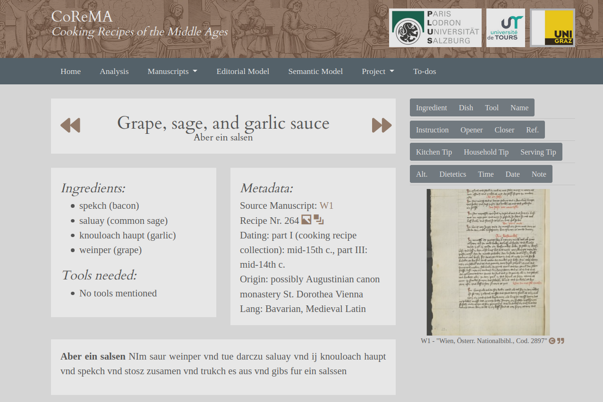

Reviewing the bread and butter of CoReMa, Cooking Recipes of the Middle Ages
Table of Contents
- Abstract
- IntroductionThis review was updated in April 2021 as the result of detailed peer-review that greatly improved its contents. The reviewer is a postdoc in Historical Linguistics and Digital Humanities at the University of Neuchâtel. She holds a PhD in Medieval Studies and, although the framework of her thesis project was philological, her postgraduate program was interdisciplinary and she holds a minor specialisation in Medieval History and Medieval Art History.
- Presentation of the project and its status
- CoReMa’s method: a transdisciplinary approach
- Interface
- Conclusion
- Bibliography
- Notes
Abstract
CoReMa, Cooking Recipes of the Middle Ages is an ongoing project whose method involves a semantically annotated, conservative edition of medieval manuscripts containing cooking recipes. With a rigorous philological approach and the aid of semantic web technologies, CoReMa’s method aims at teasing out the textual relations between different recipe collections, even enabling the comparison between manuscripts in different languages. Its semantic model covers many and very heterogeneous aspects of the transmission of cooking knowledge including, just to give an example, the treatments of a condition or illness. CoReMa is an ambitious project and food historians will not be the only scholars that will benefit from such a comprehensive (and intuitive) resource.
IntroductionThis review was updated in April 2021 as the result of detailed peer-review that greatly improved its contents. The reviewer is a postdoc in Historical Linguistics and Digital Humanities at the University of Neuchâtel. She holds a PhD in Medieval Studies and, although the framework of her thesis project was philological, her postgraduate program was interdisciplinary and she holds a minor specialisation in Medieval History and Medieval Art History.
Collections of cooking recipes have a rich textual tradition in medieval Europe that goes beyond the famous compilations of De re coquinaria,2 and CoReMa, Cooking Recipes of the Middle Ages provides a rigorous method to tackle its complexity. With the objective of pursuing an in-depth analysis of the transmission and interrelation of medieval cooking recipes, CoReMa proposes an interdisciplinary approach that produces a semantically annotated digital scholarly edition (Klug and Laurioux 2020).
At the time of writing, the project holds the edition of fifteen manuscripts from the Late Middle Ages in several German dialects. Thus, this review concerns the edition of the German Cooking Recipe Collections, although the project has a much larger scope. CoReMa defends a cross-linguistic approach as one of the defining features of this project in comparison to previous national-based initiatives. Therefore, either the addition of other languages or, at least, the enrichment of the German materials with the corresponding references to other textual traditions is expected considering the overall goals of the project.
There are a few resources that are of invaluable help for researchers in food history (or food historiography). One of the resources which has received the most attention outside specialised circles3 is The Sifter (Wheaton 2020), a database of recipes, ingredients, and cooking techniques retrieved from more than 7,000 bibliographic works. Another relevant resource is The Food Timeline (Olver 2015). On the one hand, this resource provides information about when foods were first introduced (visualised, as expected, in a graphical timeline). On the other hand, this information is complemented with historic recipes using those foods, together with various food-related topics such as historic food prices, historic menu collections, adaption of old recipes, and other information about culinary research. This database provides both scholarly sources and ‘popular’ ones from outside academia (such as famous cooking blogs or chefs’ websites).4 Although all these resources somehow cover the same historical and geographic framework as CoReMa, in the sense that Medieval Europe is well represented in both databases, the project being reviewed provides a philological approach not shared by the aforementioned resources. Thanks to the scholarly edition of the recipes, the codicological analysis of the manuscripts that contain them and the phylogenetic study of these sources, it is possible to obtain an exhaustive knowledge on the socio-historical and cultural factors that brought about those recipes. This comprehensive analysis can hardly be achieved by more generic endeavours.
Considering that CoReMa’s work is still in progress, I will dedicate a section to briefly discuss the project and its overall goals in relation to its current status (see section ‘Presentation of the project and its status’). ‘CoReMa’s method: a transdisciplinary approach’ presents an overview of the methodology and the section ‘Interface’ discusses the main functionalities of the graphical user interface. The review ends with some final remarks that mainly expand on the scholarly contribution of this project (see section ‘Conclusion’).
Presentation of the project and its status

The information related to the agents and agencies behind this project is accessible, clear and well-organised. CoReMa stems from the international cooperation between the Centre for Information Modelling - Austrian Centre for Digital Humanities of the University of Graz (ZIM-ACDH) and the Centre for Advanced Renaissance Studies of the University of Tours. The principal investigators are Helmut W. Klug, who leads the Austrian participation, and Bruno Laurioux, who is in charge of the French team. The project is funded by the Agence Nationale de la Recherche (ANR) and by the Austrian Science Foundation (FWF). Project start and end dates are not explicitly mentioned on the website. However, an online search for the grant number showed that the project is being funded from March 2018 until October 2021.
The overall goal of CoReMa is to gain new knowledge on cooking traditions from a cross-cultural perspective by studying how medieval European cooking recipes were transmitted. To achieve it, the core of the methodology is the scholarly digital edition of the recipes. The texts of this edition are semantically annotated in order to tease out the answers for the overall research question: what were the food habits in Medieval Europe. The contents of this annotation are exploited thanks to different search functions. At the moment, it is possible to filter the recipes according to different criteria, like period or dialects. A search by ingredient(s) is also enabled. These search functions make it possible to trace the distribution of certain recipes and ingredients. Accordingly, the tool is already a useful resource to shed light on certain gastronomical trends even at this stage of the project, where all manuscripts have not yet been edited. Besides its use by a specialised public, any person interested in cooking will enjoy browsing the contents of the project and learning the particularities of medieval cuisine.
At the time of writing, we can access the edition of fifteen manuscripts, all of them pertaining to the German Cooking Recipe Collections. For these witnesses, a curated text is provided and, for most of them, the structural and semantic components of the texts are also identified, like the categorisation of ingredients, instructions or tools. A useful resource to evaluate the state of the project is the to-do list accessible from the main menu.5 This list gives us a quick overview of the state of the corpus in terms of its development. The manuscripts whose edition is planned are listed and it is clear which ones have already been incorporated to the website (about a fourth of the collection). What is unclear to a user is the criteria for the selection of sources. Considering the goals and the description of the project provided, it is to be expected that their scope includes every manuscript of cooking recipes inside the pertinent chronological framework. However, no information is given about how the source compilation was done.
Besides giving an overview of the state of the collection in terms of progress, the to-do list contains tasks related to other development areas like the graphical user interface, or aspects of the analysis that still need to be implemented. With the complete edition of a number of witnesses and the implementation of a faceted search, we have a fair glimpse at what will be the final product. The most relevant functionality that is yet to be implemented at the moment of writing is related to intertextual relations between recipes and the analysis of recipes migration.
In the goals of the project, a development of an ontology to formalise the semantic annotation is mentioned. No information about this task is collected in the to-do list so it can be assumed that the list was conceived as a practical work document for the development of the portal and thus has little use for the more general tasks.
CoReMa’s method: a transdisciplinary approach
CoReMa is presented by its creators as an interdisciplinary project, but I argue that the final result can be described as transdisciplinary: a cohesive unit of frameworks that surpasses the disciplinary perspectives (Jensenius 2012). In this sense, a scholarly digital edition is transdisciplinary by definition, but it is worth highlighting some of the other elements that interact to create a project as the one being reviewed. Thus, I will decompose what so smoothly comes together to provide an overview of some of the components of the project.
Material philology
For each manuscript of the collection, a codicological description is provided. The user can either access an overview of the edited manuscripts thanks to a timeline or a more ‘traditional’ description by selecting a specific manuscript.

In regards to the more thorough codicological description given for each manuscript, it should be noted that not all descriptions present the same level of detail, thus the available metadata varies from one artefact to the other. However, in general terms, this physical description includes a description of the support, containing information about the cover and binding, together with aspects of the mise en page.
The codicological analysis is complemented with bibliographic references. When possible, the link to a digital facsimile is included. The metadata provided for all manuscripts concerns the catalogue references with a Zotero link that enables the immediate import of any bibliographic reference.
The contents of the codicological description are mostly in German: all the available manuscripts come from libraries in German-speaking countries and the contents of this section are likely collected with the help of catalogues in German. Thus, the presence of German would be understandable if the contents were generated on the fly, but it does not seem to be the case. Nevertheless, if users can read the edition of the text in a historical Germanic variety, the manuscript description should not pose any problems.
Considering that the edition may involve just a very small portion of the codex, the detailed description of the manuscript, with all the references provided, renders a more accurate view of the artefact.
Paleography
The last part of this section is dedicated to the ecdotic component of the project in which the edition decisions will be further discussed. However, at this point it is pertinent to announce that the criteria of a digital documentary edition are already an inestimable source of palaeographic information (Pierazzo 2011, 475). This is even more straightforward when the transcription is always displayed next to a facsimile rendition of the folium, as it is the case in this project.
Besides the palaeographic knowledge that can be retrieved from the edition of these manuscripts that have different provenances (and thus, diverging writing practises), palaeographic metadata are given for each manuscript. As with the previous codicological description, the availability and detail of this information vary from one manuscript to the other, but all entries include the identification of the hands and of the script types. The most comprehensive palaeographic descriptions include an inventory of letterforms and specific graphical uses with their location in the manuscript.
Considering the particularities of the transmission of cookbooks, the identification of hands is crucial to identify the socio-historical context in which latter additions, comments or even modifications of the recipes are done.
Linguistics
Any scholarly edition of a medieval text requires a profound knowledge of the historic variants of the language under analysis. However, the semantic annotation of this project explicitly formalises part of that knowledge. At the moment, the semantic annotation not only consists of the description of the different parts of the recipe, like the opener, tips or instructions, but it also contains an under-the-hood standardisation of its contents. Certain elements like those which model the ingredients, the dish name or the cooking instrument are given not only the English translation in an attribute, but the Wikidata identifier as well. The latter not only increases the interoperability of the dataset but it could also be used to disambiguate concepts for which English lacks specific terminology.6
In addition, access to historical socio-linguistic information is enabled through an interactive map of the linguistic varieties covered in the editions. The manuscript descriptions include the languages of the artefact, but through the map it is easier to approach the materials written in a particular variety.
Semantic Web technologies
As presented in the section ‘Presentation of the project and its status’, this part of the project is not fully implemented. It is worth mentioning, nevertheless, that certain steps were already taken, like the implementation of Wikidata identifiers to unambiguously map certain concepts. Even if no information is provided about the state of development of the ontology, a possible approach is to use the editions themselves to elicit the informational requirements of the ontology. In any case, even if the ontology is not fully implemented until a considerable number of texts is edited, it would be interesting to see how the different editions are linked to the ontology.7 It should be noted that the project is stored in the open management system GAMS (Zentrum für Informationsmodellierung 2006-2021), an archive for managing, publishing and long-term archiving of digital resources from the Humanities. It provides the project resources with permanent identification and enriched metadata among other functionalities that can facilitate the implementation of semantic web technologies.
Textual scholarship: ecdotic model and text encoding
As stated in the objectives of the project, CoReMa’s goal is to provide a philological edition of the source texts that follows a hyperdiplomatic transcription model (Klug and Böhm 2020). The theoretical framework of this editorial model is found in Hofmeister-Winter (2003). This model is being implemented in other ongoing edition projects at the University of Graz and this use backs up, in a way, CoReMa’s choice (Klug and Laurioux 2020).
The specific advantages of this model in relation to the research questions and goals of the project are not explicitly addressed in the documentation. Even if the objectives of the project argue the need of providing scholarly curated texts, there is no specific discussion of the adequacy of the hyperdiplomatic model to CoReMa’s particular goals. Details are given, however, about the implementation of this edition typology in the project Mittelalterlabor 8 for which it is said that the moderately diplomatic criteria, with no normalisation, pursue the representation of writer specific features in the palaeographic dimension, together with ‘text-genetic information, and dialectal markers that are represented on character level (e.g. sound changes, dialect markers)’ (Klug and Laurioux 2020). It is inferred that similar goals are intended by the CoReMa project. Due to the conservative criteria, CoReMa’s edition depicts a faithful representation of each of the witnesses. It should be noted that the same recipes are preserved in different witnesses and therefore a multi-witness critical edition of those recipes would shed light about their transmission. However, the comparison of recipes and the deeper analysis of recipe migration is not yet available, thus we need to wait to see what will be CoReMa’s strategy to formalise and visualise the witnesses’ comparison.
The actual implementation of the hyperdiplomatic model by CoReMa is very detailed: From the main menu we can access a thorough documentation in which the editorial criteria are exhaustively explained (Klug and Böhm 2020). Besides expounding how the structural elements are encoded, and how specific phenomena should be treated (like abbreviations or punctuation marks), there is a detailed guide about character representation. They are following the guidelines of the MUFI character recommendation (Haugen 2015) and they present a list of common allographs and how they should be encoded. The criteria in this aspect are very conservative and the general norm is ‘the text of the source is represented as detailed as feasible’ (Klug and Böhm 2020). The documentation about the edition model ends with an explanation on how certain encoded information will be displayed.
Besides the general editorial guidelines, specific criteria may apply to certain manuscripts. In the description of each manuscript we might find ‘encoding remarks’ where these particular criteria are explained. Considering the heterogeneous sources (different languages, different periods, different writing traditions) it is appropriate to present these specific sections to reveal (and formalise) the idiosyncrasies of a particular manuscript.
In addition to the criteria concerning the representation of the primary sources, CoReMa provides their semantic annotation guide. In this valuable piece of documentation, they propose a very fine-grained segmentation of the recipes in semantic elements. Besides classifying the different types of recipes and their structural parts (like the opener or closer), it identifies the mentions to dishes, ingredients, tools, household tips, kitchen tips, serving tips, instructions, time spans and explicit health benefits.
The guide presents, on the one hand, the specific use of TEI elements and attributes needed to convey the semantics of the textual elements, and, on the other hand, the CoReMa-specific elements. The distinction between one type and the other is not always explicit. Nevertheless, the explanations are brief but clear with examples that illustrate very well the specific uses at hand.
The ingredients, dishes and tools are annotated with their Wikidata identifier, if possible. The lack of an identifier can be due to issues when interpreting a term (see Klug and Eibinger 2021a for an example) or because there is no equivalent item in Wikidata. The CoReMa team might consider creating the Wikidata entries themselves for some of the most obscure terms.9
There were only two minor aspects that could be reviewed in a future
version. First, the presence of the element <unclear> in the
semantic model description: it should solely belong, in my opinion, to the
documentation about the editorial criteria. Second, the use of the attribute
@commodity in the CoReMa-specific elements
<ingredient>, <dish>, and
<tool>. Considering the semantics of the attribute, it only
seems appropriate in the last one of them. Also, the expected value is a Wikidata
identifier, therefore, an attribute of the TEI classes
att.global.linking, att.canonical or
att.identified could be a more suitable candidate.
As stated in the documentation, ‘all information relevant to the cooking process and related spheres (e.g. conservation) can be represented’ (Eibinger and Klug 2020) and the level of detail formalised in the encoding scheme is indeed remarkable. The digital edition from the point of view of the graphical user interface will be described in the section ‘The digital edition’.
Interface
Browse and search functionalities
The German Cooking Recipe Collection is accessible from a user-friendly, aesthetically pleasing interface (Klug et al. 2020). The front page (Fig. 1) presents an image of each edited manuscript (with its sigla) from which we can directly access its transcription or the description of that manuscript (Gallery view). This is a particularly convenient front page for recurrent visitors. Manuscripts that have already been semantically annotated present, in addition, the option ‘Recipes’. This presentation is very convenient because one can access a specific manuscript immediately from the front page without having to perform any queries first. Just above the manuscript images, a secondary navigation bar offers five options to browse the manuscript collection with different views:
- The first one presents a map of all the archives: clicking on one of the pinpoints displays a list of the manuscripts that are available from that archive.
- ‘View Dialect Map’ displays a map with the dialects. By clicking on one of the dialect areas we can access the list of edited manuscripts written in that linguistic variety.
- The timeline described above (see section ‘Material philology’) is accessible from this menu. Even if its function is not to be a chronological filter, but to explore the historical dimension of the collection, the contents of edited manuscripts can be accessed from here. This means that the timeline can be also used to select a manuscript from a specific time frame.
- The option ‘Indices’ takes the user to a table of the recipes with a number of properties that can be used to filter its contents. In addition, there is a text field that filters the complete collection based on string match. Among the metadata fields available there is the name of the recipe (both in English and the original one), the witness, the archive and the provenance of the manuscript that contains the recipe, and the language. It is possible to toggle the different columns, to export the results, and to change the layout, displaying the recipes as cards instead of table rows.
- The last one filters the manuscripts available in the ‘Gallery view’ by archive.
At the moment of writing, the project has edited almost 25% of the planned collection. This means that many of the archives or the dialects presented in the maps of options 2 and 3 have no representing manuscripts. A visual cue to differentiate the areas of both the dialect and archive maps that have no manuscripts would improve the user experience.
Besides the options given on the home page to browse the collection, the ‘Analysis’ tab on the main menu provides additional search functions. New analytical functions are expected to appear under this section in the future.
- ‘Fuzzy full-text recipe search’: A text field (that allows wildcards) from which you can search the contents of any of the recipes targeting specific components of the recipe: the title, the full text, the tags or any field. The ‘fuzzy’ aspect of this search is a good approach to deal with the scripto-linguistic variants considering the corpus is not lemmatised.
- ‘Manuscript description search’: A text field that allows wildcards. The search can be restricted to specific fields: title, full text or tags.
- ‘Advanced ingredient search’: Two different types of search to filter the recipes depending on their ingredients. One of them is a text field that searches the English title of the recipe. The other is a faceted search with autocomplete function that allows you to see the possible ingredient combinations: after selecting one ingredient in a drop-down menu, another one that contains the ingredients with which the selection shares a recipe appears. New drop-down menus will be presented until no more options are available. A small inconvenience is that these drop-down menus present the ingredients in a counter-intuitive case sensitive order. The results, that is, the list of recipes that match the search criteria, are exportable in CSV and PDF format and they contain the permanent URI and the title of each recipe.
The digital edition

The only caveat of this edition might be the use of colour to encode two different types of information: ink use of the source and abbreviations. It might not be uncommon to find a decorated initial that contains an abbreviation, for instance, so one wonders which criterion would prevail.
At the bottom of the screen (Fig. 3), there is a menu with four tabs (five, if the manuscript is semantically annotated) that facilitates the navigation from the contents of one tab to the other. The first tab contains the manuscript description; if available, the tab ‘Recipes’ takes you to the results of the semantic annotation; the tab ‘Transcription’ corresponds to the edited text; the ‘Full-Width’ one presents a display of the edition with a vertical layout: the facsimile appears on top and in a bigger frame than in the ‘Transcription view’; and the last tab ‘Metadata’ provides very detailed metadata of the edition in different standards that are available for download.
 
A single recipe can be accessed either from the query in the ‘Analysis’ or the recipes overview. This presentation displays a slightly different layout than the views discussed above although it presents most of the same functionalities. Above the text of the recipe, we can find a text block that contains a list of the ingredients and tools mentioned in the recipe. Note that the list presents two types of ingredients, the base ingredients and what we might call ‘intermediate ingredients’, that is, the results of mixing some of the base ingredients before completing the dish. See as an example the presence of ‘juniper berry broth’ and ‘sweet juniper berry broth’ in the ingredient list of the recipe Klug and Eibinger (2021a). A differentiation between both types of ingredients could be practical.

Data sharing
As mentioned in the section ‘Semantic Web technologies’, CoReMa is managed via the GAMS system. Not only this guarantees the preservation of the project, especially in terms of data safety and integrity, but it is also an asset for data sharing strategies. From the edition of the witnesses (both from the transcription view and the recipes view) it is possible to access the metadata of the manuscript in different formats, all of them downloadable. The TEI file of every released version of the edition is provided together with the metadata in Dublin Core XML format. The fact that they supply an individual file for each version of the edition means that anybody interested only in the hyperdiplomatic edition, but not in the semantic annotation, can download directly the relevant file that matches their interest. It is possible that in the future other formats will be available for download, like an RDF serialisation.
The contents of the portal, including the edition and the facsimile images, have an explicit Creative Commons license (BY-NC-SA 4.0). ‘How to cite’ information is also available on each page and in every recipe, thus the dataset (and the documentation) of the project can be reused and easily credited.
Conclusion
This review analyses the edition of the German Cooking Recipe Collections of the CoReMa project. The CoReMa project has a very ambitious goal, a comprehensive understanding of the food habits in Medieval Europe, but the work so far done with this collection is an excellent proof of concept and a compelling show-case of their method.
CoReMa defends a cross-linguistic approach to overcome the possible deficiencies of national-based or monolingual methods that can hardly keep track of the intertextuality relations among recipes of different manuscript traditions. It will be interesting to see exactly the type of interrelations between recipes that will be studied and how they are going to be formalised and implemented. Nevertheless, considering the current use of semantic web technologies, and the future work planned, it is expected that an extended use of these technologies will be the preferred method to tackle this specific challenge.
Guided by a research question in food history, the philological approach is the cornerstone of the project. One of the most noteworthy features of the project is the semantic annotation. The semantic model is a fascinating reading in itself, and I am eager to see how it will be further put to use by the project. Their annotation schema goes beyond the mere identification of ingredients or dishes and it is indisputable that their annotated corpus will be relevant for adjacent disciplines to food history, such as the history of medicine or the philosophy of medicine.
Besides the current and future contribution of this project to food history, other disciplines will benefit from its corpus. Just as an example, together with all the heterogeneous linguistic information amenable to be retrieved from a digital documentary edition, the semantic annotation of the edition can be further exploited from a diachronic linguistics perspective. In this sense, I believe that the project resources could be exploited to study semantic shifts in food-related vocabulary; in addition, the fact that the corpus covers different linguistic varieties opens the door to historical socio-linguistic studies.
With transparent policies, thorough documentation and great usability, CoReMa is publishing a high-quality scholarly digital edition. As it is an ongoing project, its extensive functionalities will be even further enhanced.
Bibliography
- Eibinger, Julia, and Helmut W. Klug. 2020. ‘Semantic Model’. In CoReMA - Cooking Recipes of the Middle Ages. Corpus - Analysis - Visualisation, edited by Helmut W. Klug. Centre for Information Modelling (ZIM-ACDH), University of Graz. https://web.archive.org/web/20201212131944/http://gams.uni-graz.at/o:corema.semanticdec.
- Grocock, C. W, and Sally Grainger, eds. 2006. Apicius: a critical edition with an introduction and an English translation of the Latin recipe text Apicius. Totnes [England]: Prospect.
- Haugen, Odd Einar. 2015. MUFI Character Recommendation v. 4.0. Medieval Unicode Font Initiative. https://bora.uib.no/bora-xmlui/handle/1956/10699.
- Hofmeister-Winter, Andrea. 2003. Das Konzept einer ‘Dynamischen Edition’ dargestellt an der Erstausgabe des ‘Brixner Dommesnerbuches’ von Veit Feichter (Mitte 16. Jh.): Theorie und praktische Umsetzung. Kümmerle.
- Jensenius, Alexander Refsum. 2012. ‘Disciplinarities: Intra, Cross, Multi, Inter, Trans’. https://web.archive.org/web/20201212163539/https://www.arj.no/2012/03/12/disciplinarities-2/.
- Klug, Helmut W., and Astrid Böhm. 2020. ‘Editorial Declaration’. In CoReMA - Cooking Recipes of the Middle Ages. Corpus - Analysis - Visualisation, edited by Helmut W. Klug. Centre for Information Modelling (ZIM-ACDH), University of Graz. https://web.archive.org/web/20201212190013/http://gams.uni-graz.at/o:corema.editorialdec.
- Klug, Helmut W., and Julia Eibinger. 2021a. ‘Cooking Recipe for “Drink, a healthy water” (bs1.163)’. In CoReMA - Cooking Recipes of the Middle Ages. Corpus - Analysis - Visualisation, edited by Helmut W. Klug. GAMS. https://hdl.handle.net/11471/562.10.657. https://web.archive.org/web/20210502091756/http://gams.uni-graz.at/o:corema.bs1.163.
- Klug, Helmut W., and Julia Eibinger. 2021b. ‘Cooking Recipe for “Electuary from quince, pear, or apple” (h2a.10)’. In CoReMA - Cooking Recipes of the Middle Ages. Corpus - Analysis - Visualisation, edited by Helmut W. Klug. With the help of A. Böhm, J. Eibinger, and C. Steiner. GAMS. https://hdl.handle.net/11471/562.10.1149. https://web.archive.org/web/20210502091730/http://gams.uni-graz.at/o:corema.h2a.10.
- Klug, Helmut W., and Julia Eibinger. 2021c. ‘Cooking Recipe for “Trisenet” (h2a.1)’. In CoReMA - Cooking Recipes of the Middle Ages. Corpus - Analysis - Visualisation, edited by Helmut W. Klug. With the help of A. Böhm, J. Eibinger, and C. Steiner. GAMS. https://hdl.handle.net/11471/562.10.1148. https://web.archive.org/web/20210502092842/https://gams.uni-graz.at/o:corema.h2a.1.
- Klug, Helmut W., and Julia Eibinger. 2021d. ‘Cooking Recipe for “Wine sauce” (h2a.2)’. In CoReMA - Cooking Recipes of the Middle Ages. Corpus - Analysis - Visualisation, edited by Helmut W. Klug. With the help of A. Böhm, J. Eibinger, and C. Steiner. GAMS. https://hdl.handle.net/11471/562.10.1159. https://web.archive.org/web/20210502090227/https://gams.uni-graz.at/o:corema.h2a.2.
- Klug, Helmut W., and Bruno Laurioux. 2020. ‘About the Project’. In CoReMA - Cooking Recipes of the Middle Ages. Corpus - Analysis - Visualisation, edited by Helmut W. Klug with Astrid Böhm and Christian Steiner. Centre for Information Modelling (ZIM-ACDH). https://hdl.handle.net/11471/562.10. https://web.archive.org/web/20210502121335/https://gams.uni-graz.at/archive/objects/context:corema/methods/sdef:Context/get?mode=about.
- Klug, Helmut W., Christian Steiner, Astrid Böhm, and Julia Eibinger. 2020. ‘CoReMA - Cooking Recipes of the Middle Ages’. Website. Centre for Information Modelling (ZIM-ACDH), University of Graz. 2020. https://hdl.handle.net/11471/562.10.
- OED = Oxford English Dictionary Online. March 2021. Oxford University Press. https://web.archive.org/web/20210501193952/https://www.oed.com/.
- Olver, Lynne. 2015. ‘Food Timeline: Food History Research Service’. 2015. https://web.archive.org/web/20201212133025/http://www.foodtimeline.org/.
- Pérez, Montse Hidalgo. 2020. ‘Recetarios medievales y tarjetas perforadas: la historiadora que lleva 50 años creando el gran archivo culinario de Internet’. EL PAÍS RETINA. 9 October 2020. https://retina.elpais.com/retina/2020/10/09/tendencias/1602249882_078647.html.
- Pierazzo, Elena. 2011. ‘A Rationale of Digital Documentary Editions’. Literary and Linguistic Computing 26 (4): 463-77. https://doi.org/10.1093/llc/fqr033.
- ‘The Food Bibliography’. n.d. Accessed 12 December 2020. https://web.archive.org/web/20201213132009/http://www.foodbibliography.eu/index_en.asp
- Thomas, Emily. 2017. ‘The Unlikely Power of Cookbooks, The 85-Year-Old Woman Who Wants to Collect Every Recipe in the World’. BBC. 2017. https://web.archive.org/web/20201213131120/https://www.bbc.co.uk/programmes/p0576bvc.
- Wheaton, Barbara K. 2020. ‘The Sifter - A Food History Research Tool’. 2020. https://web.archive.org/web/20201213131731/https://thesifter.org/Home
- Wilson, Bee. 2015. ‘The Archive of Eating’. The New York Times, 29 October 2015, sec. Magazine. https://web.archive.org/web/20201213131850/https://www.nytimes.com/2015/11/01/magazine/the-archive-of-eating.html.
- Wörterbuchnetz. 2020. s.v. ‘trisenet’. Version 01/21. Trier Center for Digital Humanities, Universität Trier. https://api.woerterbuchnetz.de/dictionaries/Meta/lemmata/lemma/trisenet/0/tei-xml.
- Zentrum für Informationsmodellierung - Austrian Centre for Digital Humanities. 2006-2021. ‘GAMS. Geisteswissenschaftliches Asset Management System’ https://hdl.handle.net/11471/521.1.
Notes
- This review was updated in April 2021 as the result of detailed peer-review that greatly improved its contents. The reviewer is a postdoc in Historical Linguistics and Digital Humanities at the University of Neuchâtel. She holds a PhD in Medieval Studies and, although the framework of her thesis project was philological, her postgraduate program was interdisciplinary and she holds a minor specialisation in Medieval History and Medieval Art History. ↑
- See Grocock and Grainer (2006, 116-20) for an overview of the transmission of this work showing its great success. ↑
- It has been covered in large-circulation periodicals or news media like the BBC News (Thomas 2017), New York Times Magazine (Wilson 2015) or El País (Pérez 2020). ↑
- For a more academic resource that is exclusively focused on the compilation of bibliographic references, scholars can consult The Food Bibliography (‘The Food Bibliography’ n.d.). ↑
- https://web.archive.org/web/20210502085119/https://gams.uni-graz.at/archive/objects/context:corema/methods/sdef:Context/get?mode=todos. ↑
- The English translations are provided using the corresponding Wikidata label, which might not always be the most intuitive translation of certain terms. See, for example, the recipe in Klug and Eibinger (2021a) where the label ‘mus’ in English is used to translate Bavarian ‘Taig’ (not to be confused with the standard German word for ‘dough’). Even if the lemma ‘mus’ does not appear in English dictionaries like the OED, the Wikidata identifier (Q1953925) provides the user with the necessary information to interpret the term. ↑
- See for instance this discussion in the TEI Github repository: https://web.archive.org/web/20201213212835/https://github.com/TEIC/TEI/issues/1860. ↑
- https://web.archive.org/web/20201214151226/http://gams.uni-graz.at/context:malab. ↑
- See for example the English label ‘trysenet’ used in a few recipes like in Klug and Eibinger (2021d) but with the spelling ‘trisenet’ as the title of a recipe in Klug and Eibinger (2021c). Even if the term is well documented in historical and specialised dictionaries of German (Wörterbuchnetz 2020, ‘trisenet’), no pertinent references to ‘trysenet’ in English were found online. ↑
@article{corema,
author = {Bermúdez Sabel, Helena},
title = {Reviewing the bread and butter of CoReMa, Cooking Recipes of the Middle
Ages},
journal = {RIDE – A review journal for digital editions and resources},
number = {14},
year = {2021},
doi = {10.18716/ride.a.14.1},
url = {https://doi.org/10.18716/ride.a.14.1},
}TY - JOUR
AU - Bermúdez Sabel, Helena
TI - Reviewing the bread and butter of CoReMa, Cooking Recipes of the Middle
Ages
T2 - RIDE – A review journal for digital editions and resources
IS - 14
PY - 2021
DA - 2021/11
DO - 10.18716/ride.a.14.1
UR - https://doi.org/10.18716/ride.a.14.1
PB - Institut für Dokumentologie und Editorik e.V.
LA - en
ER - Bermúdez Sabel, H. (2021). Reviewing the bread and butter of CoReMa, Cooking Recipes of the Middle
Ages. RIDE – A review journal for digital editions and resources, (14). https://doi.org/10.18716/ride.a.14.1Bermúdez Sabel, Helena. "Reviewing the bread and butter of CoReMa, Cooking Recipes of the Middle
Ages." RIDE – A review journal for digital editions and resources, no. 14, 2021. https://doi.org/10.18716/ride.a.14.1.Bermúdez Sabel, Helena. "Reviewing the bread and butter of CoReMa, Cooking Recipes of the Middle
Ages." RIDE – A review journal for digital editions and resources, no. 14 (2021). https://doi.org/10.18716/ride.a.14.1.